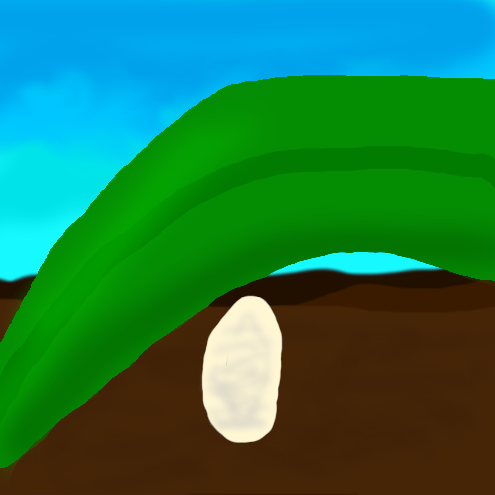

Lenard started as a measely egg. He sat around and did nothing because he literaly couldn't move. But, out of nowhere, he suddenly gets the brain power of a human! Now Lenard has emotions, opinions, and can think through a situation if he wants. Lenard now questions the meaning of life! He wants to explore, to invent, to live... But he can't at the moment because he's still just an egg. He could wait a day to hatch, but he really wants to explore.
|  | *Secret ending* |